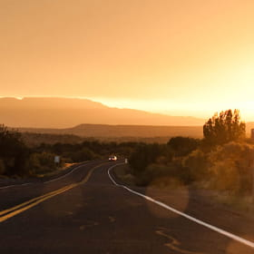
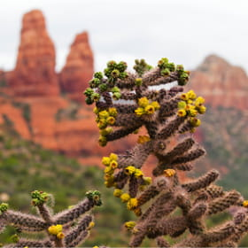
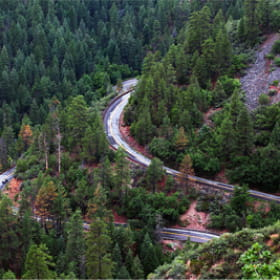
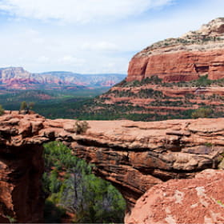

Фото и видео
Не можете решиться на путешествие из-за курса? Фотографии помогут вам забыть о политике и экономике.
Фотографии Седоны
-
 Неродные просторы1350 -
 Местная растительность143 -
 Дорога на север96 -
 Мост дьявола254
Видео городка Седона
Все еще сомневаетесь?Смотрите видеопрезентацию и скорее за билетами, пока они не подорожали в очередной раз!